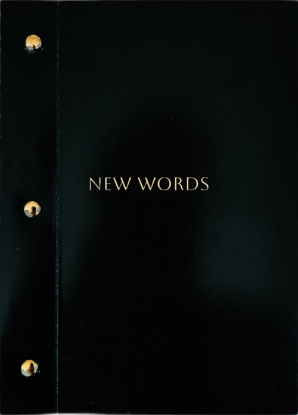
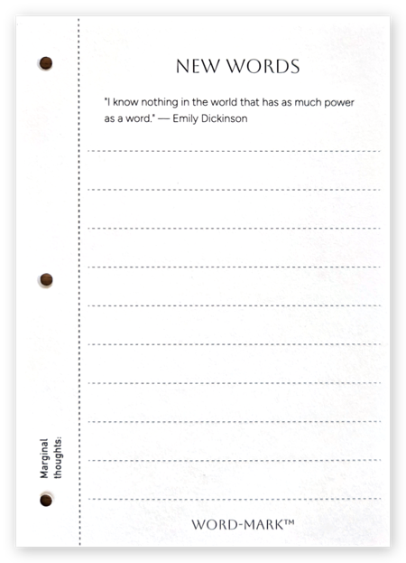

A better kind of bookmark
Vocabulary bookmark and reading system for readers, writers, and thinkers. Capture new words as you read — without losing your place, focus, or flow.


How it works
Place your Word-Mark in your book. When you meet a word you don't know, jot it down and keep reading with minimal interruption.
At the end of your session, look up each word and write its meaning beside it. The act of writing commits it to memory.
Once full, bind your bookmark into your book of new words with the brass brads. Start a fresh one. Watch your vocabulary grow.
Anatomy of a Word-Mark

-
01
Bookmark title
A gentle reminder of the linguistic discoveries that await you on every page.
-
02
Inspirational quote
A different quote on every bookmark, from writers who understood the power of language.
-
03
Room for up to 20 definitions
Front and back, for words and their meanings.
-
04
Binding holes
Three pre-punched holes, so your completed bookmark slots straight into your book of new words.
-
05
Refined writing surface
High-quality 100 lb stock resists ink bleed and keeps your writing sharp.
-
06
Marginal thoughts
A column for the ideas that don't fit elsewhere, obscured once the page is bound.
What's inside
Each package contains five bookmarks — each one bearing a different literary quote — along with everything needed to bind them into a lasting reference.
- 5 bookmarks, each with a unique quote 20 words each
- 2 notes pages Lined
- 1 cover Black, gold detail
- 3 brass bindings Reusable
Each component of Word‑Mark™ has been meticulously chosen. Bookmarks and note pages are printed on 100 lb premium cardstock, chosen for its balance of weight and flexibility — sturdy for regular use, light against a hardback spine, and rewarding to write on. The classic 130 lb black cover, finished in gold ink, protects what's inside while earning its place on your bookshelf. Brass bindings are made to be assembled and reassembled as your book of new words grows. Packaging is made from PLA, a plant-based material that cuts greenhouse emissions by up to 70% compared to regular plastic packaging.
The strange wistfulness of used bookstores, which are somehow infused with the passage of time.
The Dictionary of Obscure Sorrows — John Koenig
Remarks from fellow logophiles
Interested in stocking Word‑Mark™?